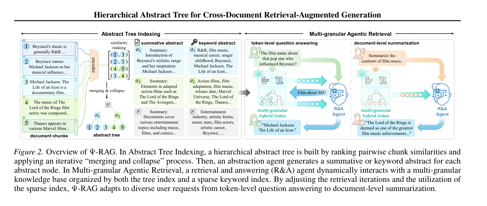
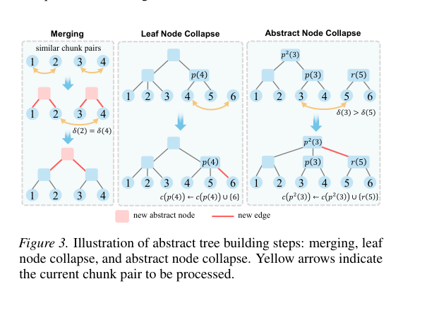
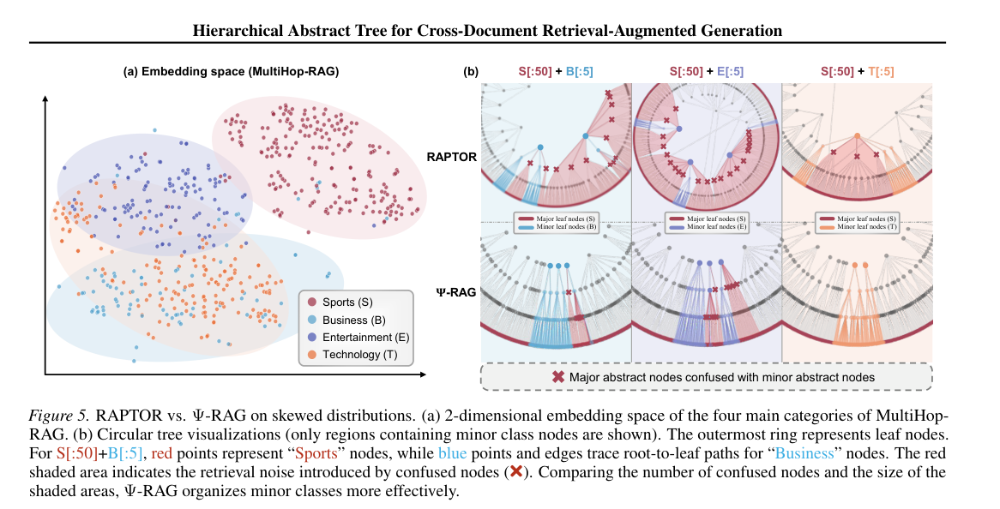
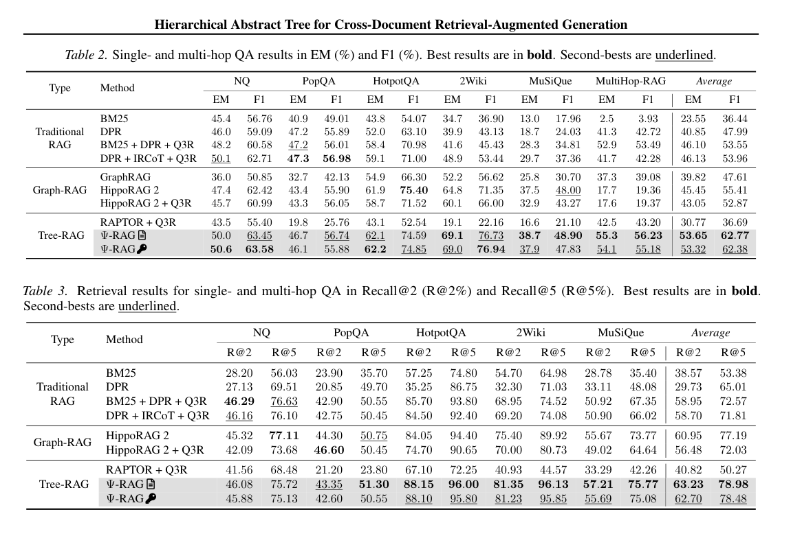
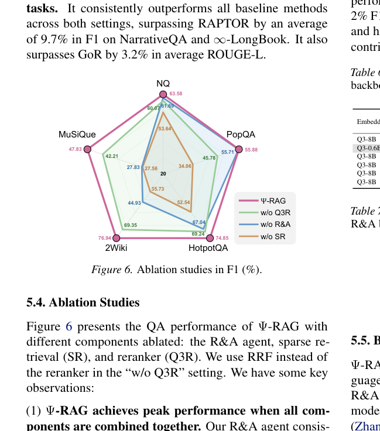

01 · TL;DR
一句话读懂 Ψ-RAG
先用“按相似度合并与折叠”构造不强求均匀深度的抽象树，再让 Agent 在树检索与 BM25 之间多轮切换、改写查询，补上 Tree-RAG 在跨文档多跳问题上的结构隔离和细节丢失。
+25.9
相对 RAPTOR论文报告多跳与单跳 QA 平均 F1 提升约 25.9。+7.4
相对 HippoRAG 2平均 F1 高约 7.4 个百分点，Tree-RAG 首次达到强 Graph-RAG 水平。6.5×
索引速度MuSiQue 上抽象树构建比 RAPTOR 快 6.5 倍，但仍有二次方扩展瓶颈。02 · MOTIVATION
传统 Tree-RAG 跨文档时为什么失灵？
分布适应差RAPTOR 一类 k-means/GMM 聚类倾向生成大小较均匀的簇，偏斜语料中的少数主题会混入主类噪声。
结构彼此隔离树叶之间没有图结构那样的显式横向关系，多跳问题的第二跳实体往往无法由原查询直接命中。
上层摘要太粗高层摘要适合总结，却会抹掉名字、数字等 token 级细节；仅靠稠密相似度难以兼顾事实查找。
论文的关键判断是：跨文档 RAG 不是“把更多 chunk 放进同一棵树”这么简单，索引形状、检索粒度和查询轨迹必须一起改变。
03 · ARCHITECTURE
两阶段架构：离线建树，在线多轮取证
INDEX
相似度排序
编码全部 chunk，计算两两相似度并从高到低处理。→
TREE
合并与折叠
用 n-1 次连接形成抽象树，再为上层节点生成摘要。→
AGENT
多粒度检索
R&A Agent 迭代选择回答或重检，并融合树索引与 BM25。
04 · ABSTRACT TREE
“Merging and Collapse”到底做了什么？
1. Merging两个 chunk 都没有父节点时，新建抽象节点并把二者挂在下面。
2. Leaf-node collapse一个 chunk 已归属某棵子树、另一个仍孤立时，把孤立叶子直接折叠到现有父节点。
3. Abstract-node collapse二者已有不同根节点时，按深度把根合并或接入较深路径，让两边达到相同深度。
4. Rebalance + Abstraction对子节点过多的节点再平衡，然后生成段落式 summary abstract 或短语式 keyword abstract。
输入 n 个叶节点 → 按相似度顺序执行恰好 n - 1 次连接 → 得到一棵连通抽象树

容易误解的点：这不是标准的完整 AHC 二叉树。论文借鉴层次聚类的相似度次序，但通过 collapse 直接生成多叉、等深化后的抽象树。
05 · MULTI-GRANULAR RETRIEVAL
Agent 负责“下一跳搜什么”，混合检索负责“从哪里搜”
初始检索从根向叶逐层做 top-k 稠密匹配，拿到第一批 chunk。
→
判断证据R&A Agent 输出 <answer> 或 <retrieve>；后者同时生成新查询。
→
补充细节新查询检索抽象树与 BM25，使用 reranker 或 RRF 融合后继续推理。
D*i = r(q'i, T, BM25); Agent(q, D*0...D*i) → answer | retrieve(q'i+1)
查询重组不是普通同义改写，而是把前一跳得到的实体身份补入下一跳。例如把“David Gest 的妻子是谁”扩成“美国电影制片人 David Gest 的妻子是谁”，同时帮助 BM25 命中关键词、帮助树检索定位主题摘要。
06 · DISTRIBUTION ADAPTABILITY
作者为什么花一整节讨论 k-means 的“均匀效应”？
k-means 最小化簇内平方误差，在一定假设下会偏好大小接近的簇。语料分布高度偏斜时，主类样本可能被分给少数类簇，导致抽象摘要语义混杂。Ψ-RAG 用接近 AHC 的树成本直觉，让语义相近叶子的最低公共祖先尽量更深，从而允许不同规模的子树存在。

工程含义：企业知识库往往天然长尾。若目录、产品线或事故类型分布很不均匀，固定 k 或强制平衡的聚类树可能把最需要保护的小主题先“平均掉”。
07 · RESULTS
真正拉开差距的是跨文档多跳，不是简单事实题
| 方法 | NQ F1 | PopQA F1 | HotpotQA F1 | 2Wiki F1 | MuSiQue F1 | 平均 F1 |
|---|---|---|---|---|---|---|
| HippoRAG 2 | 62.42 | 55.90 | 75.40 | 71.35 | 48.00 | 55.41 |
| RAPTOR + Q3R | 55.40 | 25.76 | 52.54 | 22.16 | 21.10 | 36.69 |
| Ψ-RAG（summative） | 63.45 | 56.74 | 74.59 | 76.73 | 48.90 | 62.77 |
| Ψ-RAG（keyword） | 63.58 | 55.88 | 74.85 | 76.94 | 47.83 | 62.38 |

简单 NQ / PopQA 上，传统 DPR 与混合检索仍有竞争力；论文优势主要集中在 HotpotQA、2Wiki、MuSiQue 等要求实体关系与多跳检索的数据集。这比只看总平均值更重要。
08 · ABLATION
树、Agent、稀疏检索都不是装饰

01
移除 sparse retrieval 下降最大。PopQA 与 2Wiki 的短事实细节尤其依赖 BM25；这直接证明“摘要树不能替代叶级关键词检索”。
02
移除 R&A Agent，单跳也会掉分。收益不只来自多跳次数，查询补全与重组也能修复原始问题上下文不足。
03
reranker 是增益项，不是核心来源。用 RRF 替代 Qwen3-Reranker 后仍保持较强性能，说明主体贡献来自索引与检索轨迹。
09 · EFFICIENCY
论文说“快”，但不能忽略 O(n²) 的边界
论文内的积极结果MuSiQue 约 130 万 token 上，树构建 258 秒，相似度排序约 30 秒，比 RAPTOR 快 6.5 倍；自顶向下检索近似 O(log n)。
工业规模的硬限制全量相似度矩阵需要 O(n²) 空间，排序约 O(n² log n)。到千万级 token 后，显存、内存和索引更新时间都会成为主问题。
作者也承认这一点：论文附录提出 bucketing 与 HNSW 近邻扩展。因而“索引快”只在其评测规模与高优化矩阵运算条件下成立，不能直接外推到全公司知识湖。
10 · CRITICAL READING
这篇论文最值得保留的五个疑问
A
索引构建不是增量式。n² 相似度和全树摘要适合静态语料；频繁新增、删除文档时如何局部修复没有充分实验。
B
70B Agent 成本不低。默认抽象和 R&A 都用 Llama-3.3-70B，强基座本身贡献了多少，需要成本归一化比较。
C
对比公平性仍有配置影响。多数基线加 Q3R，但不同框架能否同等利用 reranker、摘要与迭代轮次并不完全对称。
D
“Tree-RAG 首次超过 Graph-RAG”依赖所选基线。结论在论文数据与配置中成立，不代表所有图索引或领域图谱都弱于该树。
E
答案指标不等于引用忠实度。F1 提升说明答案更准，但企业部署还需要逐引用验证、权限过滤和证据覆盖率。
11 · PRACTICAL RECIPE
把论文落到文档问答系统，应当抄哪些原则？
1. 双索引而非单索引摘要/主题层负责导航，BM25 或精确字段索引负责名字、编号和数字。
2. 把检索写成状态机每轮明确证据是否足够、下一跳缺什么、剩余轮次多少，避免无界 Agent 循环。
3. 保护长尾主题对簇纯度、少数类召回和目录覆盖单独监控，不要只看平均聚类质量。
4. 摘要保留实体共现关键词尽量使用短语而非单词，summary 同时保留关系与来源范围。
5. 增量索引先做工程约束生产系统优先考虑分桶、局部树和 ANN，不要直接构造全库 n² 矩阵。
6. 分任务控制检索深度事实题少轮次并启用稀疏检索；总结题可关闭稀疏索引并从高层摘要下钻。
最终评价：Ψ-RAG 最有价值的不是“又一种树”，而是把索引结构、查询重组和检索粒度当成一个联合系统：树负责组织语义层级，Agent 负责建立跨文档路径，稀疏检索负责把被摘要抹掉的细节捞回来。